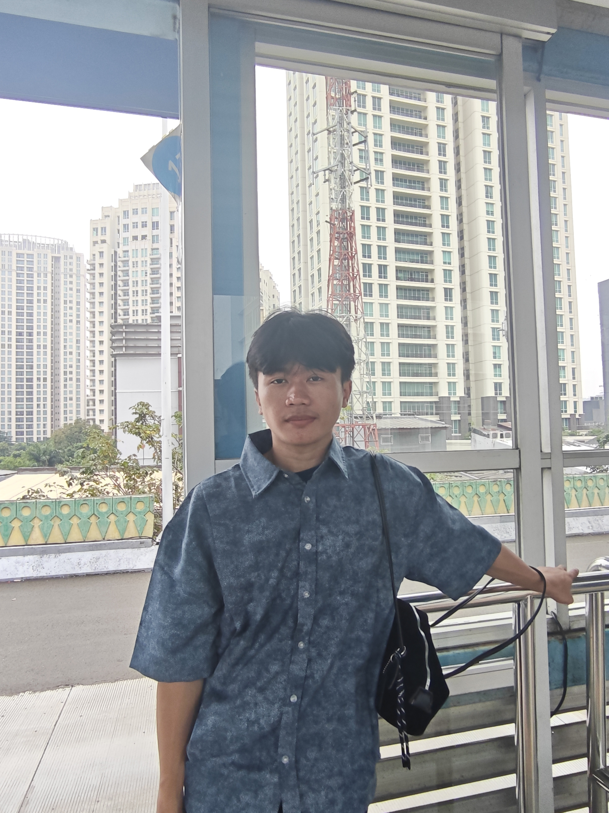
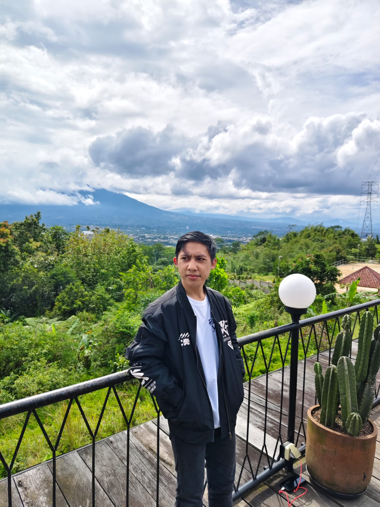
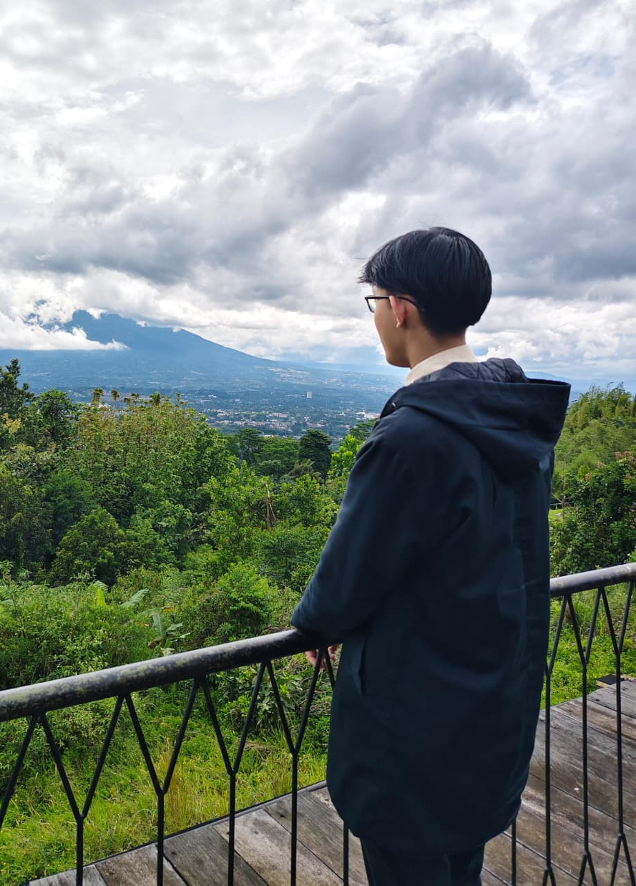
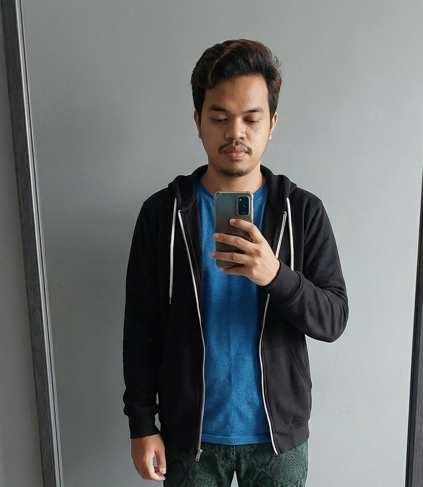
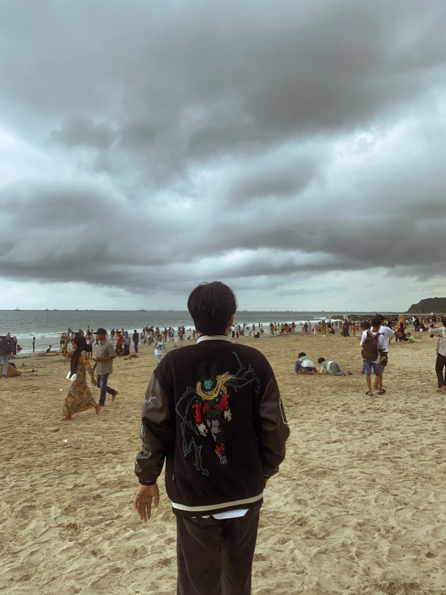
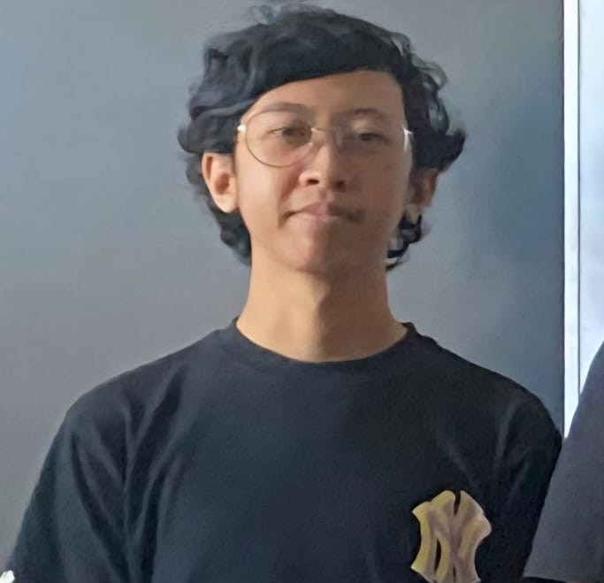

Tim Pengembang

Renaldi
Project Manager

Muhamad Rayhan Adrian
Analyst

Muhammad Farhan
Designer

Daffa Dio Fahreza
Content Creative

Komang Agus Raditya
Editor

Muhammad Rafli Faisal
Programmer
Tujuan Proyek
Proyek "BatikPedia" kemungkinan besar bertujuan menjadi ensiklopedia digital dan pusat edukasi untuk mendokumentasikan berbagai motif batik nusantara beserta makna filosofisnya. Melalui platform ini, pelestarian budaya dapat dilakukan dengan lebih modern sehingga warisan leluhur lebih mudah diakses, dipelajari, dan didokumentasikan dengan aman. Selain menyajikan katalog visual yang merangkum detail pola secara terstruktur, proyek ini juga berpotensi menjadi wadah pendukung UMKM sebagai etalase digital yang membantu para pengrajin lokal memasarkan karya mereka secara lebih luas.